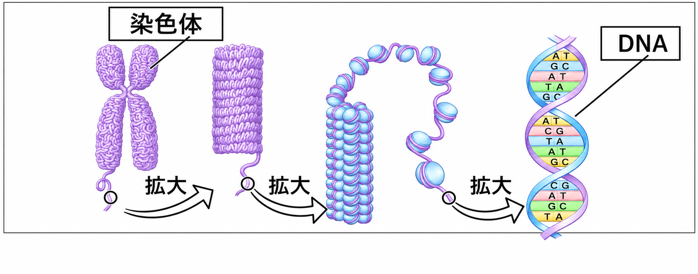
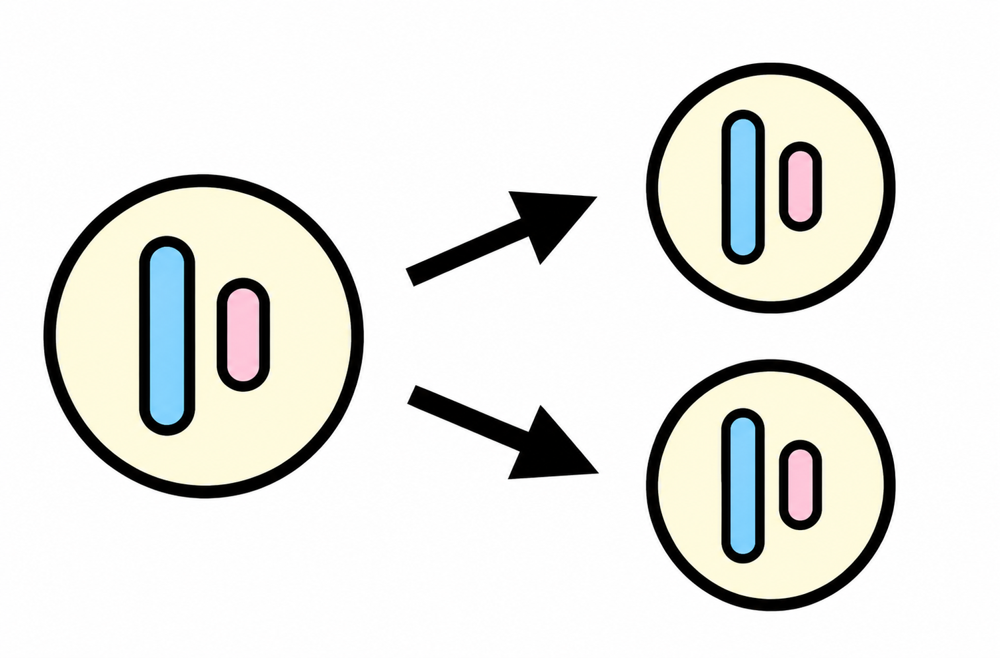
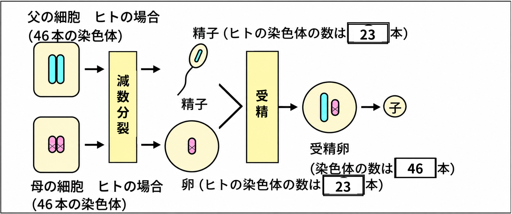
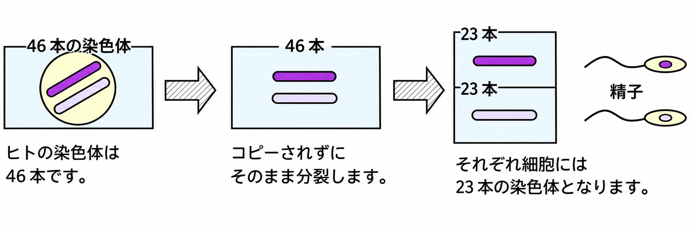
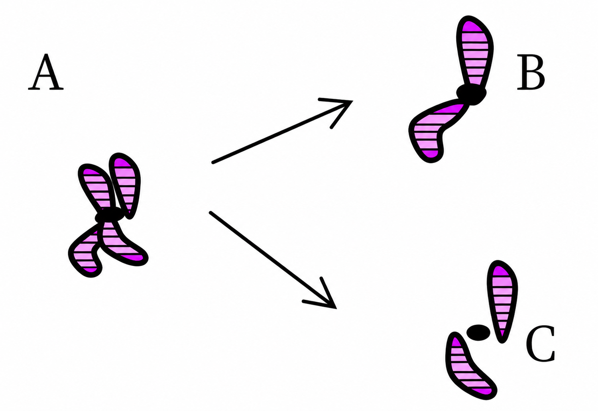
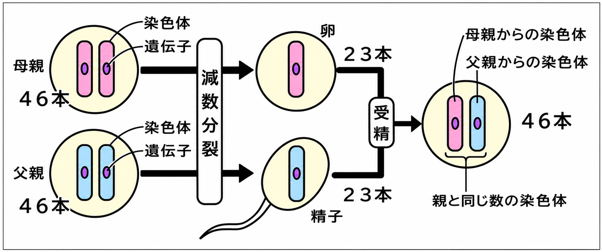

親のもつ形や性質の特徴を形質といいます。親の形質が子に伝わることを遺伝といいます。
遺伝は、細胞の核の中にある染色体にふくまれている遺伝子によって伝えられます。遺伝子は、DNA（デオキシリボ核酸）という物質でできています。

- 形質……親のもつ形や性質の特徴
- 遺伝……親の形質が子に伝わること
- 遺伝は、核の中の染色体にふくまれる遺伝子によって伝えられる
- 遺伝子は DNA（デオキシリボ核酸）という物質でできている

🏆 ベストタイム
無性生殖（栄養生殖・分裂など）では、体細胞分裂によってふえます。そのため、子は親と同じ遺伝子をもち、形質も同じです。

有性生殖では、父方・母方の生殖細胞が減数分裂によって、それぞれ染色体が半分になります。この半分ずつが受精によって結合するので、子は両親のどちらかの形質があらわれたり、両親のどちらとも異なる形質があらわれたりします。

ヒトの場合、精子の染色体は23本、卵の染色体も23本で、受精卵の染色体は46本になります。

- 無性生殖……体細胞分裂でふえる。子は親と同じ遺伝子・同じ形質
- 有性生殖……減数分裂で染色体が半分になり、受精で結合する
- 有性生殖の子は、両親のどちらかの形質や、どちらとも異なる形質があらわれる
- ヒト：精子23本＋卵23本→受精卵46本

🏆 ベストタイム
エンドウの種子には、丸い種子としわのある種子があります。このように、受精後にどちらか一方しか現れない形質どうしを対立形質といいます。
花粉が同じ株にある花のめしべに受粉することを自家受粉、花粉が別の株の花のめしべに受粉することを他家受粉といいます。
- 対立形質……丸い種子としわのある種子のように、どちらか一方しか現れない形質
- 自家受粉……同じ株の花粉が同じ株のめしべにつく
- 他家受粉……別の株の花粉がめしべにつく
🏆 ベストタイム
何代も受精をくり返しても同じ形質だけが現れる家系を純系といいます。たとえば、何代にわたっても丸い種子しかつけないエンドウ、または、何代にわたってもしわのある種子しかつけないエンドウは純系です。
対立形質をもつ純系どうしを受精させたとき、両親の一方の形質だけが現れます。現れる形質を優性形質、現れないもう一方の形質を劣性形質といいます。
- 純系……何代も同じ形質だけが現れる家系
- 優性形質……両親の一方の形質だけ現れるとき、現れるほうの形質
- 劣性形質……優性形質に対して、現れないほうの形質
🏆 ベストタイム
染色体は、Aのように、同じ遺伝子をもつ染色体がくっついてXの形をしています。これを相同染色体といいます。

生殖細胞をつくる減数分裂のとき、この対がはなれて、1つずつ別の生殖細胞に入ります。そして受精のとき、相手の染色体と合体します。これを「独立の法則」といいます。
ヒトの場合、父の精子の23本の染色体と、母の卵の23本の染色体が合体して、子の46本の染色体となります。よって、子は父と母の遺伝子を半分ずつもっていることになります。

- 相同染色体……同じ遺伝子をもつ染色体の対
- 減数分裂で対がはなれ、1つずつ別の生殖細胞に入る（独立の法則）
- 子は、父と母の遺伝子を半分ずつもつ（精子23本＋卵23本＝46本）